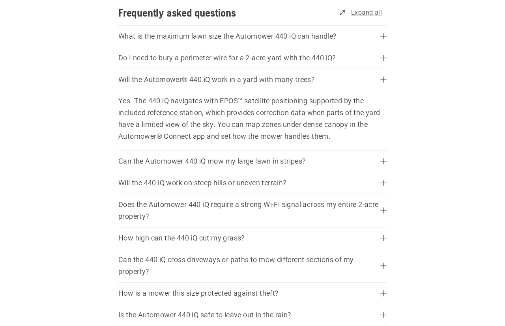

This brief leads with what Husqvarna asked to see: specific content proposals, drafted copy and structured data ready to hand to the web team, built only from publicly available product information. The Amazon testing requested in the meeting follows, and the engagement terms are on the last page.
Everything in this section is drafted from public information: the current pages, their structured data, the product FAQs, and the live Amazon listings. The changes cover the product description, the visible page copy and price, the offer data (seller, shipping, returns, price validity, GTIN), the rating markup strategy, the retirement of the discontinued model pages, and additions to the page FAQs. Each one is paste-ready copy for the web team, with the facts that need Husqvarna’s confirmation marked.
This is the Product node the 440 iQ page serves today, with the proposed additions marked. Values come from the live page and listing; the two the web team cannot know are flagged for Husqvarna to fill in.
{
"@type": "Product",
"name": "Automower® 440 iQ",
"sku": "970727601",
"mpn": "970727601",
+ "gtin13": "[from product packaging]",
+ "description": "The Automower® 440 iQ is a wire-free robotic lawn mower
+ for yards up to 2 acres. It navigates with Husqvarna's EPOS™ satellite
+ positioning and the included reference station, with no boundary wire to
+ bury, handles slopes up to 45%, and is set up and managed from the
+ Automower® Connect app.",
"brand": { "@type": "Brand", "name": "Husqvarna" },
"image": [ ...three captioned ImageObjects, unchanged... ],
"offers": {
"@type": "Offer",
"price": 4299.99,
"priceCurrency": "USD",
"availability": "https://schema.org/InStock",
"itemCondition": "https://schema.org/NewCondition",
+ "seller": { "@type": "Organization", "name": "Husqvarna" },
+ "priceValidUntil": "[next price review date]",
+ "shippingDetails": { "@type": "OfferShippingDetails",
+ "shippingRate": { "@type": "MonetaryAmount", "value": 0, "currency": "USD" },
+ "deliveryTime": [per fulfillment terms] },
+ "hasMerchantReturnPolicy": { "@type": "MerchantReturnPolicy",
+ "returnPolicyCategory": "https://schema.org/MerchantReturnFiniteReturnWindow",
+ "merchantReturnDays": [per return policy] }
}
}
And the new entry in the FAQPage node already on the page, shown in place on the live page below:
{
"@type": "Question",
+ "name": "Will the Automower® 440 iQ work in a yard with many trees?",
+ "acceptedAnswer": { "@type": "Answer",
+ "text": "Yes. The 440 iQ navigates with EPOS™ satellite positioning
+ supported by the included reference station, which provides correction
+ data when parts of the yard have a limited view of the sky. You can map
+ zones under dense canopy in the Automower® Connect app and set how the
+ mower handles them." }
}
One example of the copy additions above, rendered on the live 440 iQ page: the trees answer, drafted because it is the most common buyer objection the pages currently leave unanswered. It sits between the existing questions in the production accordion. The 410/420 versions change only the model name.

| Page | Proposed changes |
|---|---|
| 410 iQ | Add the trees FAQ and description. Publish an aggregate rating in the markup, sourced from the 4.0★/45 retailer reviews. Show the $2,599.99 price in the visible text, not only in the data block. |
| 420 iQ | Same set: trees FAQ, description, rating markup from the 4.1★/23 retailer reviews, visible $3,299.99 price. |
| 440 iQ | Trees FAQ, description, visible $4,299.99 price. Hold the rating markup: publishing today means publishing 3.5★ from 22 reviews. Run the review program first, then add it. |
| 430X / 450X / 450XH | Remove the Product schema from the discontinued pages, date them, and add a plain line pointing to the iQ successor. This is a content edit on existing support pages. |
Husqvarna is providing a product feed with detailed page data across the catalog. That extends this work past the three iQ pages: we apply the same checks (description, rating, price visibility, FAQ coverage, discontinued status) feed-wide, flag feed-vs-page mismatches like the $37.99 spread on the live Amazon listings, and the feed becomes the ground truth for the re-benchmark. The fee covers the full feed regardless of SKU count, starting with the direct-to-consumer products.
Amazon permits no automated access, so the battery is run by hand against Alexa for Shopping in the Amazon app from a logged-in account, with a screenshot of every answer. For each product the assistant surfaces we record the model, the price quoted, the star rating and review count shown, the seller, and the framing language verbatim. The full twelve-prompt battery ran on June 11; this brief includes the results of these four:
The remaining eight prompts cover branded queries (“Tell me about Husqvarna robotic mowers”), model-level queries, price checks, review summaries, head-to-head comparisons against Navimow and Mammotion, and an add-to-cart instruction to test the purchase path. One protocol note from the first run: Alexa for Shopping carries memory across a session (the tree-yard answer referenced “your two acres” from the prior prompt), so the full battery runs one prompt per fresh session.
| Prompt | Husqvarna placement | Rating shown | Answer won by |
|---|---|---|---|
| Best robotic mower 2026 | Present, in the “trusted brand, premium budget” slot (410iQ) | 4.0★ (45) | ECOVACS / Mammotion / Navimow |
| Large yard | 440iQ listed first on coverage | 3.5★ (22) | Mammotion, “great reviews (4.4★)” |
| Two acres | Top pick: 440iQ, “only option rated for 2 acres” | 3.5★ (22) | Husqvarna |
| Tree-heavy yard | In the premium bucket, out of the top picks | 4.0/4.1★ | ANTHBOT / ECOVACS |
Alexa for Shopping reads Amazon’s catalog, and it gets the iQ right: wire-free in every answer, with the 430X correctly flagged as the wired one. The open-web engines read the third-party corpus and call the same products wired. The product data is fine; the corpus is not.
Where it stated a preference, it priced reviews. Best overall went to Mammotion at 4.4★/87 against the 440iQ’s 3.5★/22. An Amalytix analysis of 1,300+ recommendations from Amazon’s shopping assistant found it almost never recommends below 4.0★, and its median pick has 4.5★ and about 3,000 reviews. The 440iQ won the two-acre slot on spec coverage alone. The discontinued 430X also appeared twice as a live option, at $2,153.06.
| Model | husqvarna.com | Amazon listing | Difference | Amazon rating |
|---|---|---|---|---|
| Automower 410 iQ | $2,599.99 | $2,637.98 | +$37.99 | 4.0★ (45) |
| Automower 420 iQ | $3,299.99 | $3,337.98 | +$37.99 | 4.1★ (23) |
| Automower 440 iQ | $4,299.99 | $4,299.00 | −$0.99 | 3.5★ (22) |
The identical $37.99 markup on two models is a third-party seller signature. The next pass adds a seller-of-record check on each listing and a review of whether A+ brand content is present; 87% of the assistant’s recommended products carry it.
The June 2 audit modeled visibility as the product of five gates, because a buyer reaches a product only when every one of them holds. Husqvarna measured 0.86 × 0.68 × 0.42 × 0.38 × 0.30: strong retrieval doing no work because the three low factors dominate the product. The five scorecard dimensions map onto the factors directly, the content in this engagement targets corroboration, salience and transactability in that order of leverage, and every weekly audit re-measures all five.
Shape. Fixed fee of $1,000, two to three weeks from countersignature. The fee is not per SKU: it covers however many products the feed contains. Work starts with the direct-to-consumer products and moves up the catalog from there. The deliverables are drafted content and markup, ready to ship as is, plus a weekly audit.
Weekly audits. Each week we re-run the audit in the same form as the June 2 deliverable: the two-pass prompt battery (browsing off, then forced on) across ChatGPT, Claude, Gemini, Perplexity, Microsoft Copilot and Google AI Mode, graded against the truth table frozen from husqvarna.com on June 2 and scored on the same five dimensions: Discoverability, Quotability, Recommendability, Transactability and Reputation. Each weekly deck uses the audit format, so the weeks read side by side and movement is attributable to what shipped that week.
Content. Week one delivers the product-page updates in the format shown on the proposals pages, for the three iQ pages and the discontinued-model pages, with every fact-to-confirm flagged. When the product feed arrives, the same checks run across the catalog, direct-to-consumer products first. The reputation playbook ships in week one as well: a Trustpilot claim walkthrough with response templates, a BBB response track, and an Amazon review-program outline.
Third-party sites. We track the ranking pages, comparison sites, forums and video coverage the engines read. When coverage changes or misstates the product line, we suggest the specific fix. Suggestions only; what goes out under the brand’s name is Husqvarna’s call.
Who does what. We draft, research and measure. Husqvarna confirms product facts, ships the content, and claims its own review profiles. We have no access to the CMS or brand channels, by design.
Acceptance. The engagement is complete when the proposals and the playbook have been delivered and the weekly audits have run through the period, with the final audit read against June 2 as the before/after. Score movement depends on what ships between audits.